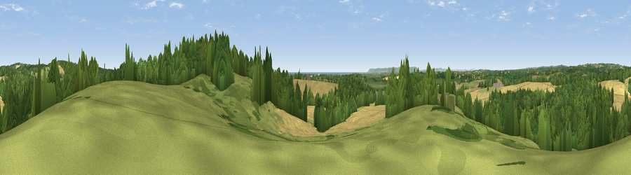

Viewpoint near Ninfield
#22225 in England · top 29% of its area beats it · near NinfieldWhere it is
The exact computed spot (TQ 69375 12875). Click the marker for map links.
The view, rendered

A 360° render of this exact spot computed from the terrain model, tree cover and land cover — summer colours, afternoon light, calibrated against photographs of famous viewpoints. Real trees, hedges and buildings will differ in detail.
The panorama
Grey silhouette: terrain skyline in each direction (720 bearings, Earth curvature and refraction included). Dashed green: skyline with trees (+15 m) and buildings (+8 m) as obstacles. Blue strip: how far the ground is visible on each bearing.
Where the view opens
Wedge length = distance to the farthest visible ground on that bearing (vegetation-aware). Rings at 10, 25 and 50 km.
What fills the view
42% woodland · 29% grassland · 28% cropland ·
Angular shares of the visible panorama (visual magnitude), not map area. Landscape diversity 0.51 (0–1 Shannon).
Key numbers
More beautiful places nearby
The staircase of upgrades: each row has a higher view potential than everything closer. Driving times are estimates from straight-line distance, calibrated against real road routing — check an actual route before setting out.
| Place | Direction | Drive | Score |
|---|---|---|---|
| Viewpoint near Ninfield | NNE · 2 km | ~5 min | 53.7 |
| Viewpoint near Catsfield | NE · 2 km | ~6 min | 56.8 |
| Viewpoint near Dallington | NNW · 6 km | ~12 min | 58.4 |
| Viewpoint near Netherfield | NNE · 7 km | ~14 min | 64.5 |
| Viewpoint near Dallington | NNW · 7 km | ~15 min | 67.2 |
| Viewpoint near Brightling | NNW · 8 km | ~16 min | 68.0 |
| Brightling Obelisk [Brightling Down] | NNW · 9 km | ~17 min | 69.1 |
| Viewpoint near Three Oaks | E · 13 km | ~24 min | 69.3 |
50.89053, 0.40684 · source: screening · position refined by local search. Computed location — check access rights before visiting.